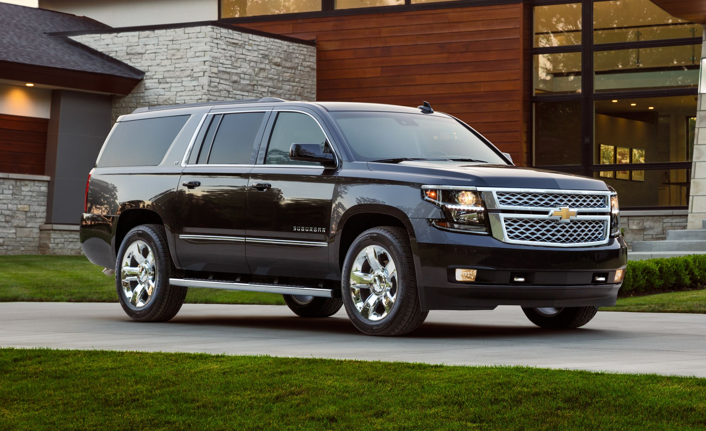
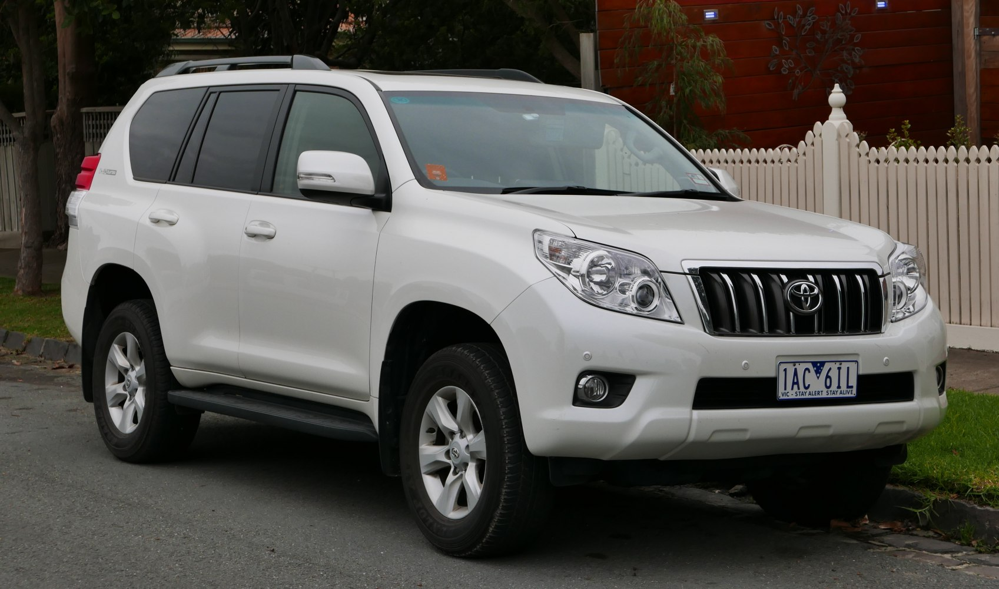
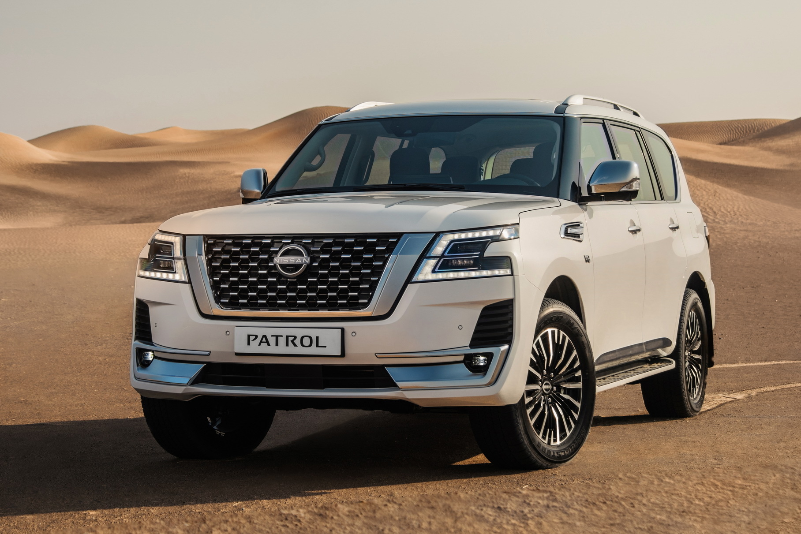
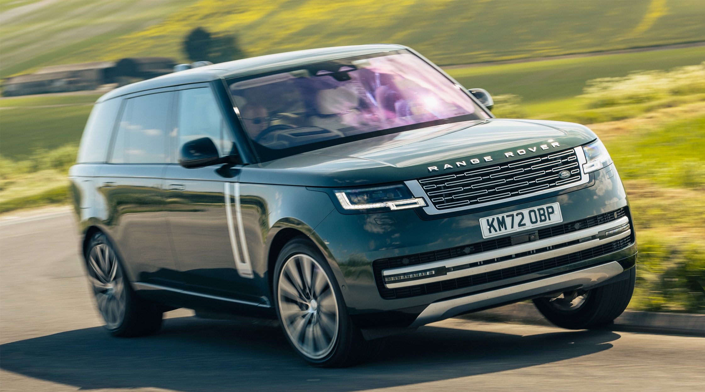
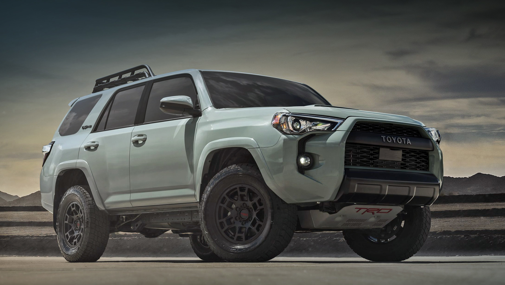

Кузов ВНЕДОРОЖНИК

Внедорожник (SUV – Sport Utility Vehicle) – это автомобиль, созданный для преодоления сложных дорожных условий. Он отличается высоким клиренсом, полным приводом, мощной рамной или усиленной конструкцией. В отличие от кроссоверов, внедорожники лучше приспособлены для бездорожья, буксировки прицепов и эксплуатации в тяжёлых условиях.
Основные характеристики:
- Полный привод (4WD или AWD) – обеспечивает лучшую проходимость по сложным поверхностям.
- Рамная или усиленная конструкция – повышенная жёсткость кузова для работы в тяжёлых условиях.
- Высокий дорожный просвет – облегчает проезд по неровностям и бездорожью.
- Дифференциалы и понижающие передачи – улучшают сцепление с дорогой при движении по грязи, песку или снегу.
- Просторный и функциональный салон – вместимость от 5 до 7 мест, удобство для дальних поездок.
Классификация:

Toyota Land Cruiser Prado

Nissan Patrol
- Компактные внедорожники – небольшие модели с улучшенной проходимостью (Suzuki Jimny, Jeep Renegade Trailhawk, Lada Niva).
- Среднеразмерные внедорожники – универсальные модели для города и бездорожья (Toyota Land Cruiser Prado, Jeep Wrangler, Ford Bronco).
- Полноразмерные внедорожники – мощные модели с максимальной проходимостью (Toyota Land Cruiser 300, Nissan Patrol, Chevrolet Tahoe).
- Премиальные внедорожники – люксовые модели с внедорожными характеристиками (Mercedes G-Class, Lexus LX, Range Rover).
- Экспедиционные внедорожники – специально подготовленные версии для экстремальных условий (Land Rover Defender, Ford F-150 Raptor, Toyota 4Runner TRD Pro).

Range Rover

Toyota 4Runner TRD Pro
Преимущества:
- Отличная проходимость – подходят для пересечённой местности и бездорожья.
- Просторный салон – больше места для пассажиров и груза.
- Надёжность и долговечность – мощные конструкции выдерживают тяжёлые условия эксплуатации.
- Высокая буксировочная способность – могут тянуть прицепы, лодки, караваны.
Недостатки:
- Высокий расход топлива – из-за массивности и мощных двигателей.
- Габариты и вес – сложнее парковаться в городе, хуже управляемость на трассе.
- Дороговизна обслуживания – запчасти и ремонт обходятся дороже, чем у легковых авто.
Внедорожник – это автомобиль для тех, кто ценит мощность, надёжность и проходимость. Он идеален для путешествий по бездорожью, но в городских условиях может уступать в манёвренности и экономичности.